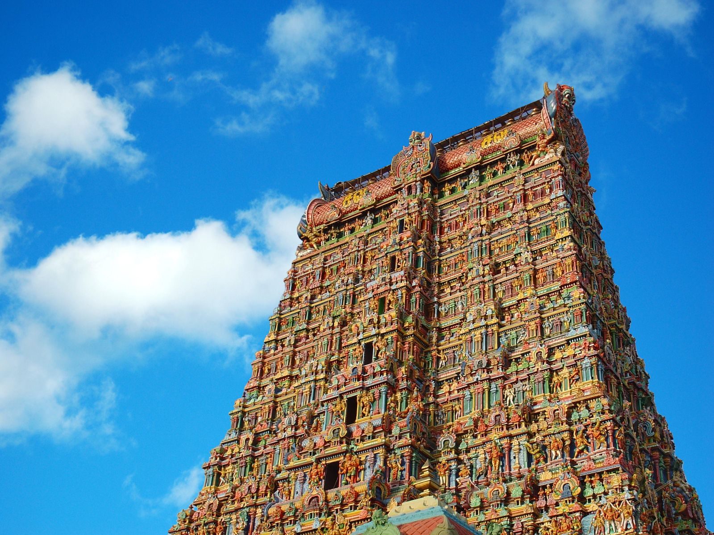

The 8th century Sree Padmanabhaswamy Temple is one of the 108 temples
in India dedicated
to
Lord Vishnu. In this temple, you will find Lord Vishnu reclining on the hooded serpent
Anantha.
It was during the time of King Marthanda Varma that this temple saw a major renovation.
What
we see today is the result of the meticulous renovation work on the ancient temple. The
devout King Marthanda Varma took it upon himself and the royal family to look after the
temple and the people of the state/kingdom. This was followed by the tradition of
Thripadidanam, the donation to the temple and its deity. The last Maharaja of Travancore
Maharaja Sree Padmanabha Dasa Sree Chithira Thirunal Bala Rama Varma, in 1965, formed
the
Sree Padmanabha Swamy Temple Trust to continue religious offerings and donations.
To this day, the temple is run by a trust headed by the royal family. The donation is
not
confined to those residing in the state, it can be from anywhere and anyone. Though
entry to
the temple is only allowed to the Hindus. And it is because of this donation that we are
here discussing this.
The date of the temple’s foundation is unknown. But as per popular beliefs, it was
established about 5000 years ago.
The palm leaf records at the temple mention that sage Divakara Muni Vilwamangalam
founded it. He performed rituals at Padmanabhaswamy Temple Kasaragod, also known as
Ananthapura Lake Temple. And that temple is said to be the original seat (moolasthanam)
of Anantha Padmanabhaswamy.
As per the legends, Lord Vishnu appeared before sage Vilwamangalam as an orphan kid. The
sage felt pity and allowed him to stay at the temple. He took his help in the daily
activities of the temple. One day, Vilwamangalam acted harshly on the kid, who then, ran
away towards the forest.
But, Vilwamangalam soon realized that the boy was Lord Vishnu himself. So, he went to
find him. He followed him inside a cave, which led to present-day Thiruvananthapuram.
The boy then disappeared into a mahua tree. The tree fell and took the shape of Lord
Vishnu lying on the thousand hooded serpent – Adi Shesha.
The size of Lord Vishnu in this Ananthasayanam posture extended up to 8 miles, and sage
Vilwamangalam requested him to condense to a smaller size. Lord shrank, but still, the
sage couldn’t see him completely. Trees obstructed his view, and he could see Lord
Anantha in three parts - the face, the stomach area and the feet.
The doors of Shri Padmanabhaswamy Temple in Trivandrum (Thiruvananthapuram) show the
large idol in the same way as the sage saw the lord.
History of Padmanabhaswamy Temple Trivandrum
Although the exact date of the temple construction isn’t known, the earliest mention of
the temple dates to the 9th century.
Later, during the 15th century, the roof of sanctum sanctorum was repaired, as mentioned
in the palm leaf records. The Ottakkal Mandapam in the premises was built about the same
time. And around the mid-17th century, King Anizham Thirunal Marthanda Varma ordered
major renovations in the temple.
The sanctum sanctorum was reconstructed, and the old idol was replaced by a statue made
of 12,008 shaligram stones and various herbs, collectively called katu-sharkara. By
1739, the work on the statue was completed. The king also built the stone corridor, the
gate and the flagstaff.
Then, in 1750, he dedicated his kingdom to the lord, in the Thrippadidanam ceremony.
In 1758, the pillared outdoor hall – Karthika Mandapam, was built by king Karthika
Thirunal Rama Varma. And in 1820, during the time of queen Gowri Parvathi Bayi, the
large Anantha Shyana mural was drawn.
Another major event in Sree Padmanabhaswamy Temple history was recorded in 1936, during
the reign of Chithira Thirunal Rama Varma. He outlined the Kshethra Praveshan Vilambram
(or Temple Entry Proclamation) to allow every Hindu caste and creed in the temple.
Architecture of Padmanabhaswamy Temple
Sree Padmanabhaswamy Temple Trivandrum stands out for the detailed work in stone and
bronze. The architecture is a fusion of Dravidian architectural style and Kerala style,
and the temple resembles Adi Kesava Perumal temple of Thiruvattar. Even the deities look
similar, lying in a reclining posture.
The magnificent seven-tier high gopuram, carved with elaborate designs, is the first
structure you will notice. The large corridor inside is supported by beautifully carved
stone pillars and sculptures of various Hindu deities. Beautiful murals also adorn the
walls and ceilings in various parts of the temple.
Inside the sanctum, Sri Padmanabha reclines on Adi Shesha whose hoods form an umbrella
over his head. The sanctum has three doors from which you can look at the reclining
18-foot idol of Lord Padmanabha.
Shri Padmanabhaswamy Temple Treasure
Padmanabhaswamy Temple is the richest temple in the world. The Padmanabhaswamy Temple
trust, headed by the royal family of Travancore, looks after the assets.
The treasure is a collection of valuable objects accumulated over several thousands of
years. It includes coins, statues, ornaments and many other precious artefacts, donated
by rulers and traders from around the world.
The list includes kings from South Indian kingdoms like the Cheras, the Pandyas and the
Pallavas, rulers from Greece, Jerusalem, Rome and other traders who came to visit the
temple. Donations also poured in from various colonial powers of Europe.
And because of its wealth, the temple has also been referred to as the Golden Temple in
various literatures.
The palm leaves records tell a lot about Padmanabhaswamy Temple treasure, and the gold
and precious stones donated to the temple.
Gold has been mined in and around Trivandrum for thousands of years. And the area has
also been a centre of trade. So, the gold came to the temple as offerings from the
devotees. Many royal families in Southern India too stored their wealth in the temple
vaults for safekeeping.
Also, during the reign of queen Gowri Lakshmi Bayi, many temples in Kerala were bought
under the royal governance. And the ornaments and other valuables of those temples were
stored in the vaults of Padmanabhaswamy Temple. The Kingdom of Travancore also provided
refuge to many rulers who then donated their valuables to Lord Padmanabha.
Most of the records are yet to be studied, and out of the six known vaults, one still
hasn’t been opened. Authorities also discovered two vaults later, both unexplored.
MEENAKSHI AMMAN TEMPLE

Meenakshi Amman Temple, temple complex in Madurai, Tamil Nadu state,
India, said to originally date as far back as the 4th century CE but in its present form
built in the 16th–17th centuries. According to Hindu legend, the god Shiva came to
Madurai in the form of Sundareswarar to marry Meenakshi, the daughter of the Pandya
ruler; Meenakshi was a manifestation of the goddess Parvati. The Meenakshi Amman Temple
is dedicated to their union.
The massive temple is enclosed by high walls entered through soaring gopuras, or gateway
towers. Inside are colonnades, columned mandapas (halls, some of which were used for
shops, storerooms, and stables), a sacred tank, lesser shrines, and, at the centre, the
two main shrines to Sundareswarar and Meenakshi. The gopuras are some of the most
elaborately decorated in India. Brightly painted, they are completely covered with
figures of divinities, celestial beings, monster masks, guardians, and animal mounts.
The tallest of the 14, the southern gopura, rises to more than 170 feet (52 m).
Jodhpur. Rajasthan. Jaswant Thada an architectural landmark in Jodhpur, India. A white
marble memorial, built in 1899, by Sardar Singh in memory of Maharaja Jaswant Singh II.
Indian architecture
Within the temple complex is the magnificent Aiyaram Kal Mandapa (Thousand-Pillar Hall),
which in fact contains 985 columns carved with divinities, female musicians, and
attendant figures. The Pottamarai Kulam (Golden Lotus Pond), a large pool where devotees
can bathe in holy water, is surrounded by a colonnade whose walls are decorated with
murals depicting the miracles Shiva performed in Madurai. A doorway in the west wall
leads to the Meenakshi shrine. This stands in its own enclosure, within which are
several subsidiary shrines, together with the bedchamber, where the image of
Sundareswarar is brought every night from its own shrine.
This is a living temple. Every week golden figures of Meenakshi and Sundareswarar are
seated on a swing and hymns are sung; at the annual Teppa festival their images are
mounted on floats and pulled back and forth over the Pottamarai Kulam; and the goddess’s
wedding festival is celebrated each year for twelve days in the month of Chaitra
GATEWAY OF INDIA
The Gateway of India is one of India's most unique landmarks situated
in the city of Mumbai. The colossal structure was constructed in 1924. Located at the
tip of Apollo Bunder, the gateway overlooks the Mumbai harbor, bordered by the Arabian
Sea in the Colaba district. The Gateway of India is a monument that marks India's chief
ports and is a major tourist attraction for visitors who arrive in India for the first
time. At one point of time, this monument represented the grandeur of the British Raj in
India. The total construction cost of this monument was approximately 21 lakhs and the
whole expense was borne by the Indian government. A favourite spot for tourists,
nowadays, this monument attracts vendors, food stalls and photographers. The passing of
the 'First Battalion of the Somerset Light Infantry' was recorded as the first main
event that took place at the Gateway of India. This ceremony was conducted on February
28, 1948, when the last set of British troops and divisions left India,
post-independence.
History
The main objective behind the construction of the Gateway of India was to commemorate
the visit of King George V and Queen Mary to Bombay (Mumbai). In March 1911, Sir George
Sydenham Clarke, who was then the Governor of Bombay, laid down the monument's first
foundation. Although, this plan was approved only in 1914, the reclamations at Apollo
Bunder were completed only in 1919. The architectural design of Gateway of India was
fashioned by architect, George Wittet. It took 4 years to complete this monument's
construction.
Architectural Layout
The structural design of the Gateway of India is constituted of a large arch, with a
height of 26m. The monument is built in yellow basalt and indissoluble concrete. The
structural plan of Gateway of India is designed in the Indo-Saracenic style. One can
also find traces of Muslim architectural styles incorporated in the structure of the
grandiose edifice. The central dome of the monument is about 48 feet in diameter, with a
total height of 83 feet. Designed with intricate latticework, the 4 turrets are the
prominent features of the entire structure of the Gateway of India. There are steps
constructed behind the arch of the Gateway that leads to the Arabian Sea. The monument
is structured in such a way that one can witness the large expanse of the 'blue blanket'
right ahead, welcoming and sending off ships and visitors.
Nearby Tourist Attractions
The Elephant Caves are located very close to the Gateway of India, and tourists can
travel on motor boats to reach the Elephant Islands. Statues of the Maratha leader
Shivaji and Swami Vivekananda are installed at the entrance of the Elephant Caves. The
Taj Mahal Hotel is India's most prestigious and luxurious hotel and is situated close to
the Gateway of India.
Visiting Hours
People can visit the monument at any time of the day. The best time to visit the Gateway
of India is during the period of November to March, as the post-monsoon climate is very
pleasant and there are very less chances for downpours at this time.
One of India's prized monuments, the Gateway of India was built in 1924. The Gateway of
India is a major tourist hub in the city, which is located at Apollo Bunder Waterfront
in Southern Mumbai. This monument was built to welcome King George V and Queen Mary to
Mumbai and years later, the last horde of British troops left India
through this gateway.